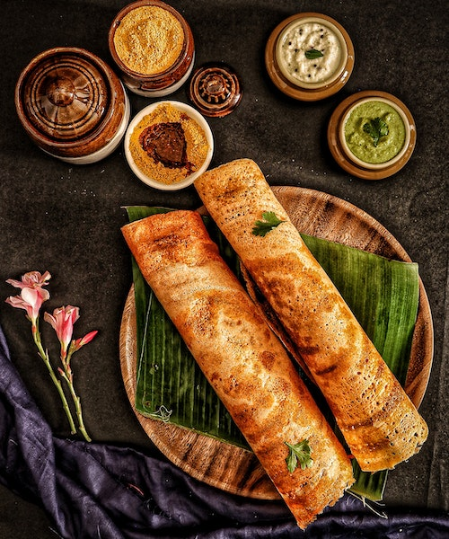

The Dosa

the best thing you can ask for breakfast!
Michelin-starred enchantment meets South Indian tradition: A meticulously crafted dosa masterpiece adorned with citrus-infused elegance, accompanied by a trio of artisanal chutneys that elevate flavors to celestial realms.
Ingredients
- Rice
- Urad Dal
- Salt and water
Instructions
- Heat the pan for 2 minutes and check whether the pan is hot enough by sprinkling water onto the pan
- Once the ozzze sound is heard pour a whole scoop of dosa batter onto the tawa and spread evenly.
- Wait for a minutes until it becomes brown and then flip it over.
- Flip it over once again when you feel like doing it.
- Tada you have.